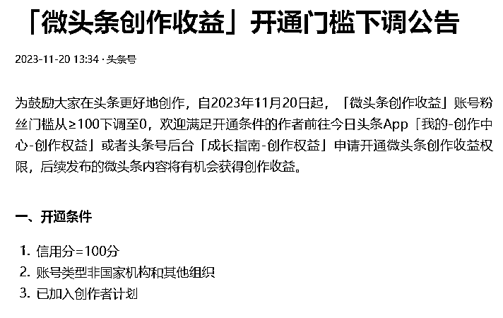
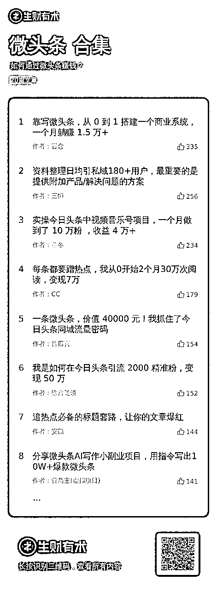
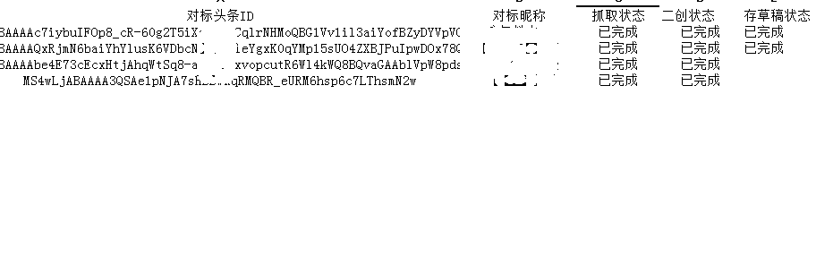
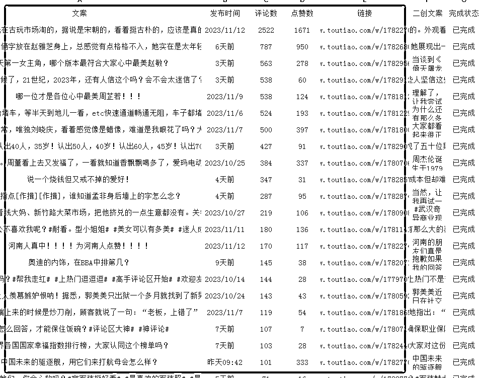
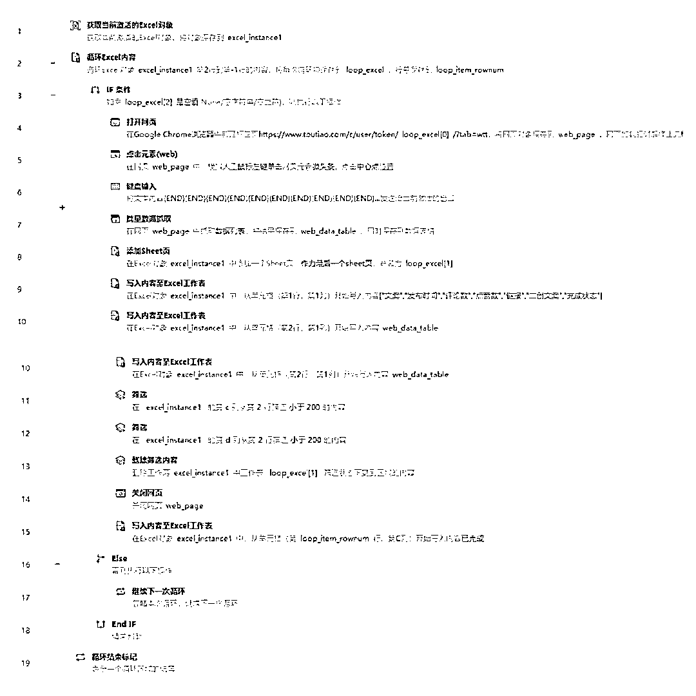
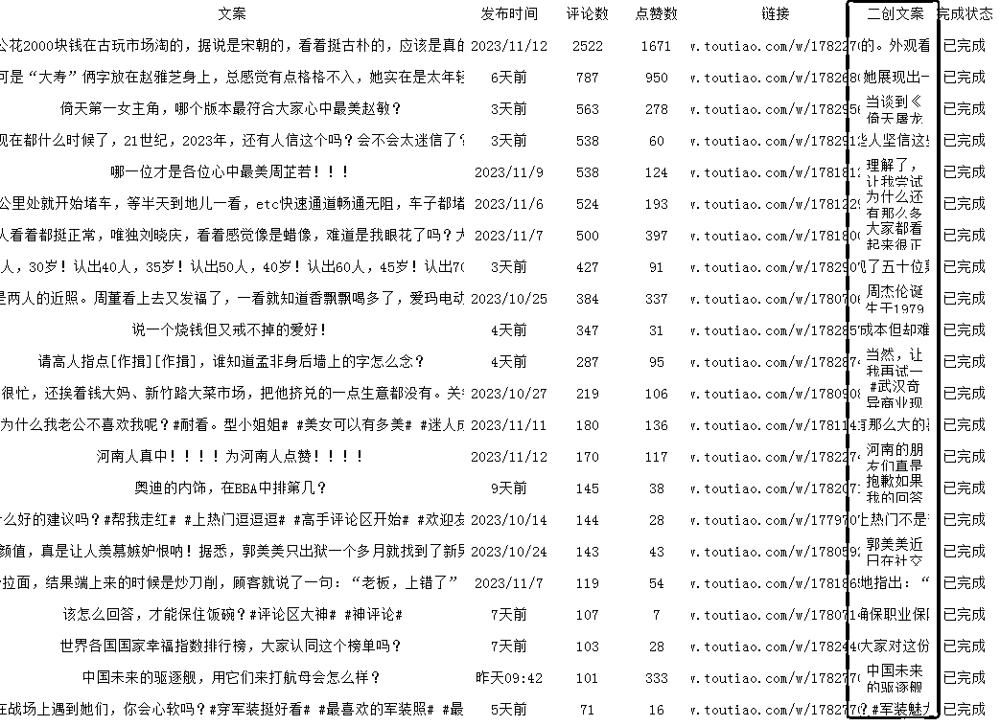
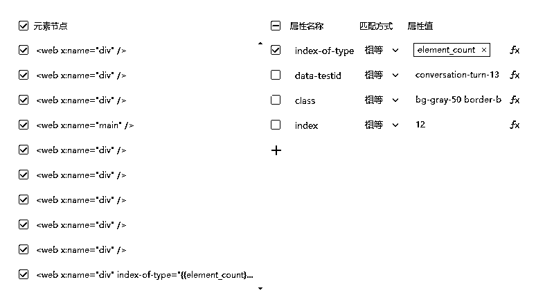
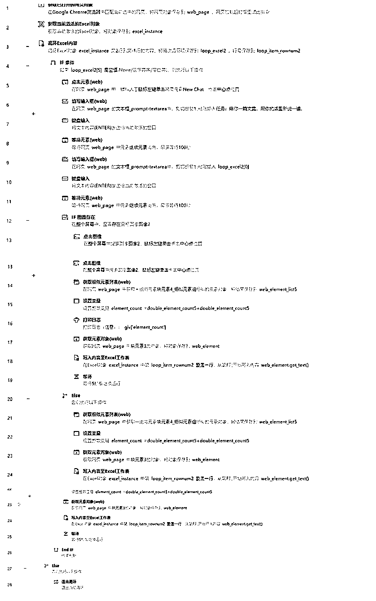
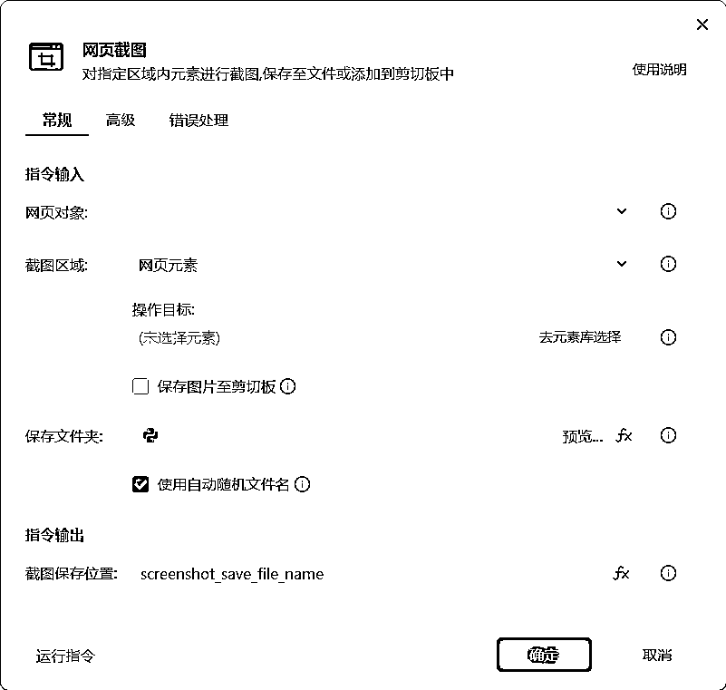
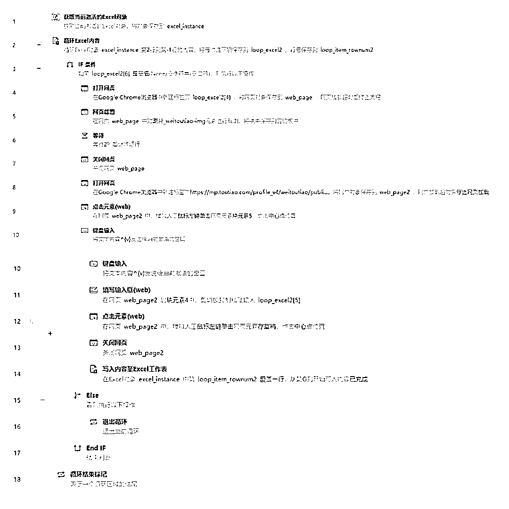

来源：https://p8y34fwle2.feishu.cn/docx/IVM4dYErponsGcxVO20cASq9nwb
大家好呀，我是马小威，影刀官方认证的中级工程师，Uibot认证的初级工程师，擅长用影刀RPA来给自己做的项目赋能，当然如果你有其他我还没涉及的项目，也欢迎来跟我唠唠。
如果你恰好也在做微头条，略懂影刀，那这篇文章能帮你更好地梳理RPA能如何接入项目的流程；
如果你恰好也在做微头条，不懂影刀，也完全不影响，因为我会把全部代码以及相关操作演示视频化，肯定能帮到你的！
上次写的帖子《如何利用影刀RPA进行多平台分发》@马小威，大家都反馈非常有用！能帮到大家降本增效，实在是太好了！而最近我关注到很多圈友都在做微头条项目，我也深度参与了，意识到我也许能用 RPA 为大家在微头条这个项目上降本增效，于是就有了这篇帖子，话不多说，立马上干货！
影刀的相关介绍，以及官方的学习渠道在上述的帖子有详细说明，本次就不再赘述了，感兴趣的可以点进去看看。
相信头条，大家都不会太陌生。在公众号爆文之前，头条文章也是一个不错的项目，后来随着收益逐步降低，大家就开始转战到公众号爆文了。
那你可能要问了，为什么我这次会选中微头条进行赋能呢？2023 年 11 月 20 日，头条官方下发【微头条创作收益】开通门槛下调公告，原来微头条的门槛需要 100 粉，而现在直接 0 粉就能开通微头条收益。那作为生财的一员，咱绝对不会错过这次泼天的富贵啊，必须上矩阵，站在风口！

当然，我也不是微头条的大佬，微头条相关的操作，我就不班门弄斧了，直接找到了微头条的相关精华帖合集，感兴趣的想要精细化运营的，可以深究一下。

不建议新人自己原创，首先是咱们得网感还没练好，自己盲目写的话，正反馈来得太慢，容易在这过程中就丧失信心而放弃。
所以我的建议是，跟公众号爆文的操作逻辑一致，找到合适的对标账号先进行模仿，后期再逐步超越。
这个只能靠我们自己手动完成，这个也是后续我们的作品能不能爆的核心。
对标选得好，爆款少不了。
推荐持续有爆款的账号，而不是低粉爆款，因为如果是后者的话，我们时时刻刻都在寻找对标账号的路上，徒增工作量，反而不利于我们做好项目的矩阵化。
本次的机器人采用【循环 Excel】的方式进行操作，所以我们需要提前准备好一个 Excel 文档，作为本次机器人的模板。
①先整理好一个【对标账号总表】，A 列放入对标账号的 ID 或是网址，B 列放入账号名称，C、D、E 列分别是工作状态。具体如下：

②当机器人在采集某一个账号时，首先需要新建一个 Sheet，Sheet 名为账号名称即可，通过【批量抓取数据】，将相关数据填入对应的 Sheet 里，具体如下：

如果是对影刀比较熟悉的话，相信看了上面的文字，就已经能自己写一个机器人出来了。
但对于新手小白，可能还有点懵，但没关系，我这边已经通过测试跑通了一个机器人。为了让大家能够更好地使用影刀给微头条项目赋能，我就直接把自己已经测试好的全代码奉上：

在抓取对标账号文案时，我们会获取到大量的文案数据，但要注意的是：并不是所有的文案数据都适合被我们拿来二创。
我们需要设置一些筛选条件，只留下符合我们要求的文案，再进行二创，就能加速我们在项目上拿到正反馈。
不用担心，Excel 数据筛选、数据删除等，在影刀都有相关的指令，只要我们设置好筛选的要求，影刀就能一并操作了。
星球里有很多 AI 提示词大佬分享过相关二创的 promot 了，大家选一个自己用着顺手的就行。
操作 GPT 的方式，相信大家都很熟练了，而我们需要做的就是将对应的 promot，让 GPT 进行二次创作，并将二创后的结果，获取并写入到我们的 Excel 表格里。具体见下图：

GPT 在捕获回答元素时，可能会出点问题，导致大家捕获的二创文案不是准确的。一定要注意变量问题

还是那句，我这边已经跑通了相关流程，为了降低大家的项目矩阵化的难度，我也把这部分完整的源代码附上，供大家参考。如果在实操中遇到有啥问题，也欢迎大家提问。

操作到这边的时候，你可能就要问了，刚刚操作的都是文字部分的，但是一篇优秀的微头条，仅仅只有文字是远远不够的啊，是不是还漏了配图呢？
大家操作过程中可能遇到的问题，我这边都有考虑到，接着看，手把手教你解决配图问题。
上述 GPT 二创完的微头条，已经存入我们的 Excel 模板，那么此刻，我们只需要让机器人逐个读取 Excel 文档中对应单元格的内容，并将这些读取到的内容填入新建微头条的正文页面就可以了。
影刀有个指令非常适合此时的我们使用，【网页截图】，作为配图，头条并没有要求我们对图片进行高度去重，基本很多账号都是用同一张图，并不影响流量。
所以，在配图方面，我们需要做的就是将原来图片中的账号水印去掉即可。

还是那句，我们要加速进场，我这边负责把 RPA 的操作门槛降低。还是给大家提供我已经跑通的源代码。
不为别的，就是想跟你交个朋友。

有人说，我真的值得花时间成本去学影刀 RPA 吗？我的回答始终如一，如果是不懂代码，而且想全面提升自己的工作生活效率的话，我都强烈建议去学习。
我始终认为，当你已经明确知道 RPA 能持续不断给你不同的项目赋能的时候，你最需要考虑的是自己如何快速能够掌握这门技能，而不是犹豫着要不要学。
正如本次分享的微头条项目一样，嗅觉灵敏的圈友早就在 11 月 20 日听说微头条降低门槛后，立马矩阵化操作了。
而如果此时你还因为自己没完全掌握 RPA 而错过了风口，那是莫大的损失。希望本次的分享对你有所启发，如果对你有一点点帮助，请不要吝啬的点赞与评论，这些都是我持续创作的动力源泉！
最后非常感谢@阿蓝@肉松给予的宝贵意见，特别感谢我的合伙人 卡姐给我的灵感和技术支持。
我是马小威一位专注研究影刀 RPA 降本增效的 95 后奶爸，最后祝大家一起生财有术！
如果你也想要提升工作效率欢迎你和我一起交流~V:mxw4260
点击此处即可获取微头条存草稿应用
点击此处即可获取微头条对标账号采集应用
点击此处即可获取微头条文案二创应用